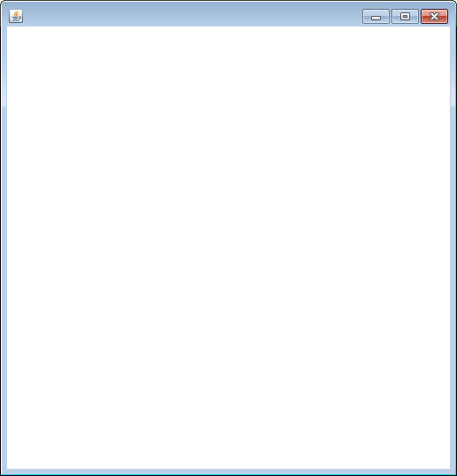
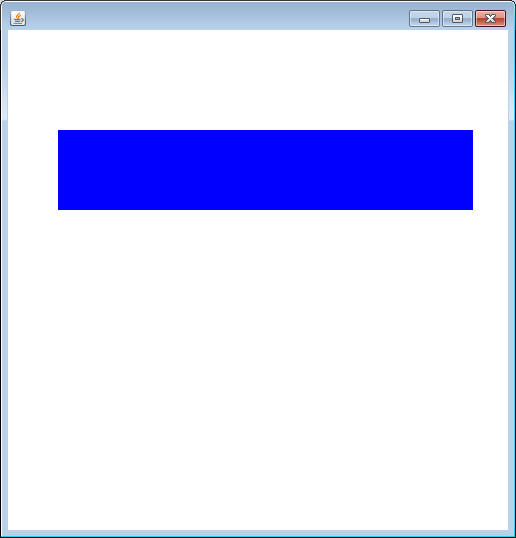
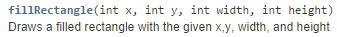
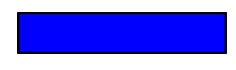
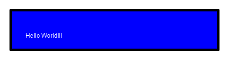
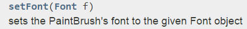
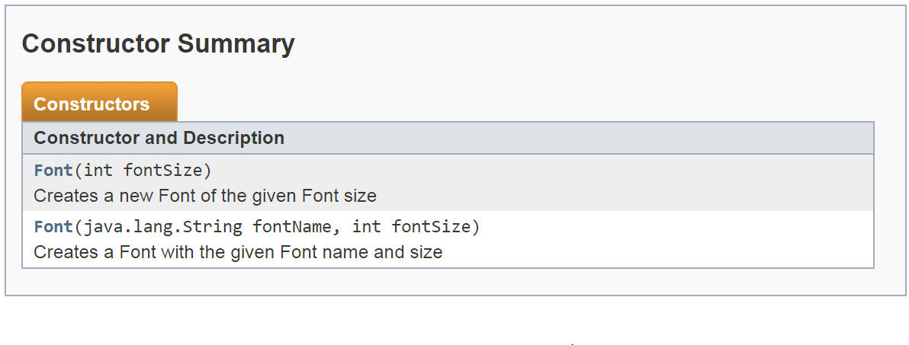
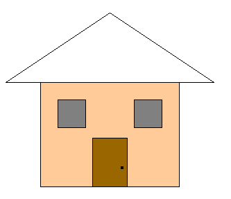
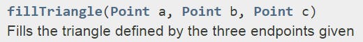

It's time to work with a different style of object.
THIS ONLY WORKS IF YOU HAVE LINKED SACCO.JAR TO YOUR BLUEJ.
One of the reasons that sacco.jar exists is to help some of the projects be more visual with less effort than raw Java would take. The process for why and how it all works is beyond us at this moment, so this will be a little bit different.
Inside of the sacco.jar is a class named SaccoWindow, which as an object has the basic structure to create a window. Copy the following class to the your project:
import sacco.*;
public class WindowRunner
{
public static void main()
{
SaccoWindow w = new SaccoWindow();
w.showWindow();
}
}
By importing sacco.*; you're giving yourself access to every class in the sacco folder. This time we are looking for the SaccoWindow class.
As you can see, first the object is constructed, and then the showWindow method is called. Run the program and make sure that a window appears.

This is by default what a SaccoWindow looks like. It's a blank, 500x500 pixel window.
Why so boring?
SaccoWindow is boring because it's not actually meant to be used directly. It's got a basic framework that's meant to be built upon.
How do we make a better SaccoWindow?
We will talk much more about the specifics of how inheritance works later this later, but for now we are just going to jump write in. In the same project as the Runner, add the following class.
import sacco.*;
import sacco.gui.*;
public class HelloWindow extends SaccoWindow
{
}
extends is an advanced concept meaning that our HelloWindow class now is a copy of a SaccoWindow object.
Now change the Runner to be the following, which constructs a HelloWindow instead of a SaccoWindow.
import sacco.*;
public class WindowRunner
{
public static void main()
{
HelloWindow w = new HelloWindow();
w.showWindow();
}
}
Running the program again should result in the same window. This is because all that we've done is extend the SaccoWindow class, we haven't changed anything.
How do we change how the window looks?
SaccoWindow has many methods built in to it that make it work. We want to change the one that decides how the window "paints" itself to the screen. This is a very specific method, so be exact.
import sacco.*;
import sacco.gui.*;
public class HelloWindow extends SaccoWindow
{
@Override
public void paintWindow(Canvas canvas)
{
}
}
What the what?!? Canvas?!?
A Canvas is an object that is meant to deal with basic graphics. At a regular interval, a blank Canvas is created and then given to the paintWindow method. Currently nothing happens in the method, so nothing but a blank window is shown. To change how the window looks, we will override the method. This way we can change it to modify the Canvas.
Change the HelloWindow class to be the same as below:
import sacco.*;
import sacco.gui.*;
public class HelloWindow extends SaccoWindow
{
@Override
public void paintWindow(Canvas canvas)
{
canvas.setColor("BLUE");
canvas.fillRectangle(50,100,415,80);
}
}
The two lines of code added do the following:
1) Sets the color to blue. This does not change the entire window blue, it's more like picking up the blue marker. The next drawing command will be in blue.
2) Fills a rectangle with 50,100,415,80. This means that the upper-left corner is at (50,100) , the width is 415, and the height it 80. Don't forget that a larger y goes down the screen more.
To fill means that the rectangle will be shaded in and not just an outline.
Now run the program and make sure that you get the following:

The Canvas API has all of the methods that the Canvas can use. If you look at the fillRectangle method, you can see exactly what is needed for the method to work

There is a matching drawRectangle that will draw the outline of a rectangle. Let's use this to draw a border. Add the following lines to the end of the paintWindow method:
canvas.setColor("BLACK");
canvas.setThickness(5);
canvas.drawRectangle(50,100,415,80);
Notice that the color and thickness of the line were completely set up before the drawRectangle method was called. Order is important. Change the value in the setThickness method and see what happens. In the end, with a thickness of 5 you should get the following:

The Canvas can draw Strings as well. All it needs is the String and the x,y coord of the baseline of the String (the bottom line). Add the following two lines to the end of the paintWindow method:
canvas.setColor("WHITE");
canvas.drawString("Hello World!!!",80,156);
Now running the program should give you:

Not quite what we wanted...
There is a method in the API that will set the font, but it looks hard.

The parameter is Font object, which is another object from sacco.jar. If we want to set the Font, we have to first construct a Font object to give the method. We can look at the Font API page for help. There is a section marked Constructor Summary

It looks like there are TWO ways to construct a Font object. One with just an int, and one with a String and an int (java.lang.String is the long name for the String object). Look at the two Font objects below:
Font f1 = new Font(25);
Font f2 = new Font("Courier New",40);
Since there are two different constructors, we get to choose which one we want to use. The first is a size 25 font with the defaul font type. The second specifies that it's "Courier New" and size 40.
Now that we know how to construct a Font object, we can use it to call the method. Add the following code to the paintWindow method BEFORE THE DRAWSTRING IS CALLED.
Font f = new Font("Berlin Sans FB Demi",60);
canvas.setFont(f);
Finally, running the program after the font adjustment should give you the following:
Assignment:
Create an object that extends SaccoWindow and a Runner for each assignment below.
1) Face: Create a program that paints a face to the screen. You may make a more creative (and less creepy) face if you would like.
2) House: Create a House at least as complicated as the one below:

Working with triangles:
The drawTriangle and fillTriangle methods don't take in ints:

You need to construct three different Point objects, and then call the method. WARNING!!!! THIS IS A DIFFERENT POINT THAN THE ONE THAT YOU HAVE MADE. YOU CANNOT USE YOUR OWN TYPE. This Point class is in the sacco folder of the sacco.jar, so you can specify by typing it all out:
sacco.Point p = new sacco.Point(30,45);
sacco.Point is the specific type that you need for the compiler to be happy when using the fillTriangle method.
3) StringDisplay:
Create a SaccoWindow named StringDisplay, which will be very similar to the HelloWindow that we created before. It should print out a String somewhere on the window in a fancy font.
This Window object will be a little bit different than the first two. We are going to add a few things that make it a little more like the objects we've been creating.
-Add a single String as an instance field. This will represent the string that is displayed.
-Add a Constructor, which takes in a String as a parameter and assigns it to the instance field.
-Modify the paintWindow method so that it will paint whatever's in the instance field (Instead of the original "Hello World!!!")
Now we've created an object that takes a single String and displays it in a fancy window. Add a runner, which has the following main method:
public static void main()
{
StringDisplay sd = new StringDisplay("APCS");
sd.showWindow();
StringDisplay sd2 = new StringDisplay("Java");
sd2.showWindow();
}
Run the program and make sure that two windows pop up with APCS and Java on them.